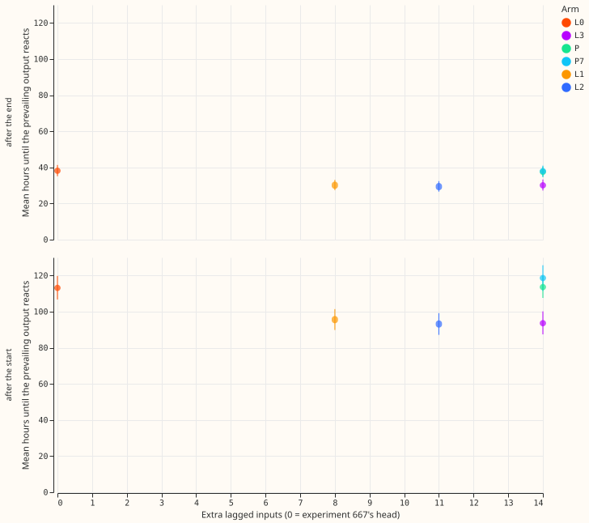
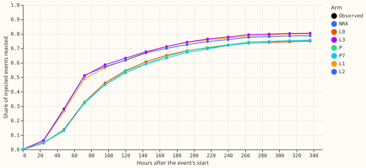
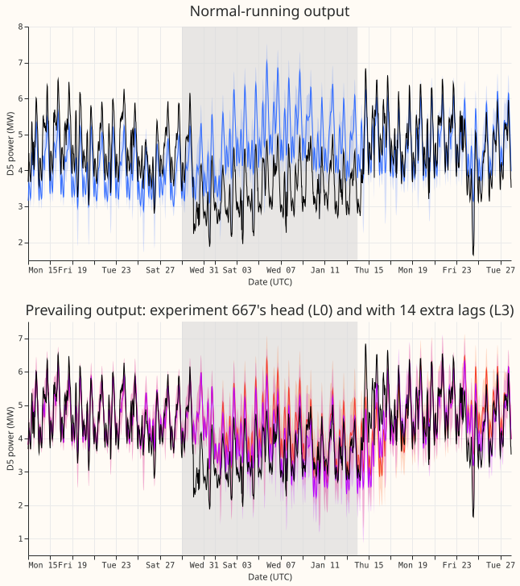
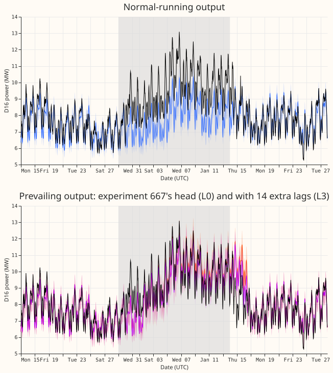
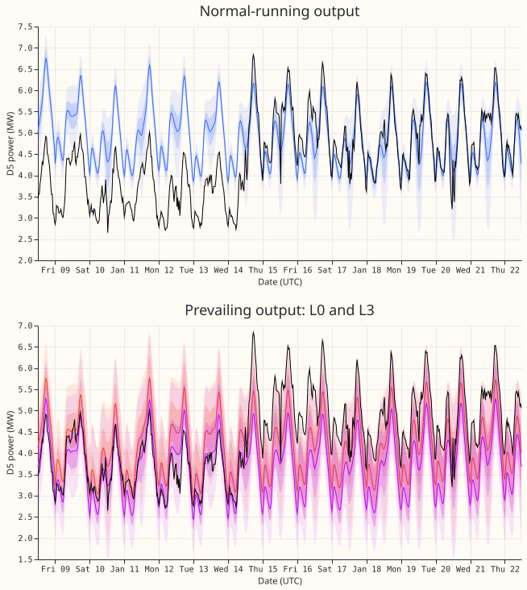
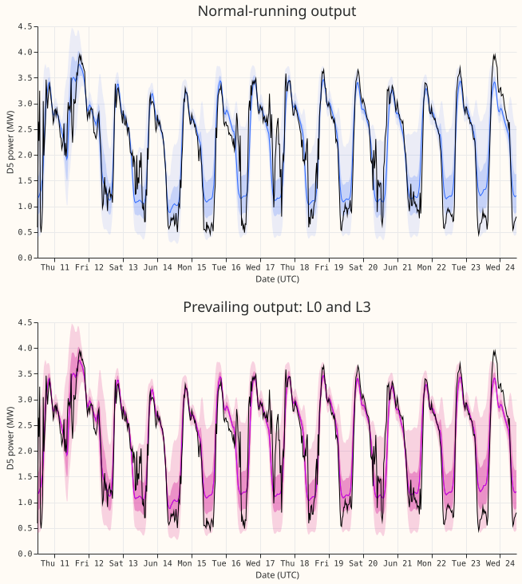

Do extra lagged power inputs make the prevailing output of the two-output demand network react faster to a load shift, without worsening the NRA output?
Giving the prevailing head 8 to 14 extra lagged power inputs makes the prevailing output react about 20 hours sooner to the start of an injected load shift and about 8 hours sooner to its end, and does not raise the event-free CRPS. The head was trained on injected shifts from the same generator. Over 1152 injected load shifts in the six development folds, the first origin at which the prevailing median has moved half-way to the new level comes 20.4 hours earlier with the 14-input set L3 (95% interval 16.3 to 24.8 hours) and 19.1 hours earlier with the 8-input set L1. Neither placebo gains anything: lags taken from another Primary change the reaction by -1.6 hours, and the same lags read 7 days earlier by +2.3 hours. The gain is under the 24 hours this experiment set in advance as worth porting, so the verdict is a small gain.
A load shift is a transfer of load between Primaries that the metered power contains and the normal-running (NRA) output deliberately ignores. The prevailing output is a separate small neural network, the head of experiment 667, that reads the Candidate's frozen NRA quantiles and a set of origin features and decides how much of a recent shift to carry forward. Its lagged inputs stop at the 24-hour and 7-day lags. This experiment adds more recent lags (6 to 72 hours before the origin, all at least 6 hours old) to that head only, so the NRA output is unchanged by construction.






Headline numbers
- Scope. Six development folds (2026-01 to 2026-06), 16 Primaries, daily origins at 09:00, 14-day forecasts. The final-test window (from 2026-07-01) is not read. Every arm is the mean of two seeds, as in experiment 667. Retraining is monthly. No GPU was used.
- Reaction time on injected events (experiment 660's generator as built into experiment 667's bank; 1152 events, 192 per fold, paired with L0; mean paired difference with a 95% interval from a bootstrap over events; origins are daily, so each time resolves to 24 hours):
| Arm | Extra inputs | Start: paired events | Start: difference (hours) | End: difference (hours) |
|---|---|---|---|---|
| L1 | 8 | 879 | -19.1 (-23.1 to -15.3) | -7.9 (-9.8 to -6.1) |
| L2 | 11 | 873 | -18.7 (-22.9 to -14.7) | -8.8 (-10.8 to -6.9) |
| L3 | 14 | 881 | -20.4 (-24.8 to -16.3) | -8.1 (-10.0 to -6.2) |
| P (other Primary) | 14 | 862 | -1.6 (-5.5 to +2.4) | -0.6 (-2.1 to +0.8) |
| P7 (7 days earlier) | 14 | 871 | +2.3 (-0.7 to +5.3) | -0.2 (-1.7 to +1.2) |
- Share of injected events that react at all. L0 reacts to 78.3% of events after the start and 45.6% after the end; L3 reacts to 82.7% and 45.8%. Events that never react before they end or before the data stop are excluded from the paired differences (the paired counts are in the table).
- Verified D5 and D16 transfer (2 events, origins from 2026-01-01 only). At D5 the first reacting origin comes 201 hours after the start with L0 and 81 hours with L2 and L3 (129 hours with L1); the placebos give 225 hours. The end moves from 57 hours (L0) to 33 hours (L1 to L3). At D16 the start stays at 81 hours for L0 to L3 and P (129 hours for P7), and the end stays at 57 hours for every arm. Two events support no interval and no general statement.
- Score, event-free rows more than 14 days from any event (CRPS in points of capacity, 1.78 million half-hours): NRA 3.45 to 4.52 by lead band, L0 4.092, L3 4.042 pooled. The paired difference L3 minus L0 is -0.050 (95% interval -0.119 to +0.000, blocks of Primary and month); the placebo P is -0.021 (-0.059 to +0.007). Normalised MAE of the median: L3 minus L0 is -0.098 points (-0.226 to -0.002).
- Score, all rows (1.92 million half-hours; CRPS): NRA 4.161, L0 4.079, L1 4.055, L2 4.057, L3 4.028, P 4.058, P7 4.049. By lead band L3 scores 3.08, 3.43, 3.89, and 4.39 (days 0 to 1, 1 to 3, 3 to 7, 7 to 14) against 3.18, 3.50, 3.93, and 4.43 for L0. The q05 to q95 band covers 0.89, 0.88, 0.86, and 0.85 of observed power (L3), against a nominal 0.90.
- Inside the real events (the 2 verified transfers and the event-table events of experiment 653 that last over 7 days; 1,836 to 13,086 half-hours per band): L3 scores 3.55, 4.56, 6.32, and 6.73 against 3.64, 4.49, 6.30, and 6.61 for L0, so L3 gains 0.09 at days 0 to 1 and loses 0.07, 0.02, and 0.12 at days 1 to 3, 3 to 7, and 7 to 14. L1 scores 3.69, 4.76, 6.71, and 6.91, worse than L0 in every band, and L2 scores 3.53, 4.59, 6.50, and 6.81. The NRA output scores 6.29, 6.56, 7.03, and 6.44, and covers only 0.38 to 0.48 of observed power.
- Cost of false alarms. The share of event-free rows on which the prevailing median departs from the NRA median by 3 points of capacity or more is 0.1165 for L0 and 0.1144 for L3 (0.1031 for L1, 0.1200 for P, 0.1226 for P7).
- Tails (prevailing output, all rows; share of observed power below the quantile, then pinball loss in points of capacity): q01 0.021 and 0.226 (L3; L0 0.021 and 0.229); q05 0.081 and 0.866; q95 0.940 and 1.035; q99 0.985 and 0.295. The lags do not change the tail calibration.
- Injected events by stage (CRPS of the prevailing output against the shifted power, L3 minus L0): before the onset or no event -0.16; in force -0.65; ended in the last 24 hours -1.02; in the last 3 days before the end +0.33 (3.2 million, 5.4 million, 0.17 million, and 0.53 million half-hours). The lags help at the start and in the middle of a shift and cost a little near its end.
Arms, method, and checks
- Arms. L0 is experiment 667's head as stored; a refit reproduces its real-row quantiles with a maximum difference of 0 (the gate for every other arm). L1 adds the residual power at 6, 9, 12, 18, 24, 36, 48, and 72 hours before the origin; L2 adds the means of the last 6, 12, and 24 hours; L3 adds the differences of consecutive trailing 24-hour means. A lag is the cleaned power minus the Candidate's lag-free median at that time, as a fraction of capacity, with a missing flag per input. P reads another Primary of the same metering group that is no electrical neighbour (a fixed map); P7 reads L3's own lags 7 days earlier. The placebo reads the other Primary's cleaned power with no injected shift, so it controls for extra capacity and not for a shift in the placebo Primary.
- Data delay. No input reads power newer than 6 hours before the origin; a test perturbs every later half-hour and checks that no input moves (and that moving the 6-hour half-hour does).
- Bank rows. The injected shift enters the new lags exactly as it enters the target, and L0's existing lag features are built from the same shifted series. The regenerated injected events match experiment 667's stored table for every fold month.
- Code reused. Experiment 667's
p667_fit.py,p667_data.py, andp667_head.pyrun unchanged (folderml-experiments/00667-*/prevailing), with experiments 647, 650, and 668. - Fallback months. November and December 2025 use the fallback hazard head with no trained weights, so no arm changes them and no arm is scored there. The D5 start in the transfer, 29 December, falls in a fallback month, so only the first origins of January carry the start reaction.
- Pre-registered conditions. P2 (NRA unchanged) holds. P3 holds: the false-alarm share is lower with L3, not higher. P4 holds: P gains 1.6 hours (under a tenth of L3's 20.4) and P7 loses 2.3 hours, well under the third pre-registered. P1 fails by its size: the gain on injected events is 20 hours, not the 24 hours pre-registered, and the 95% interval reaches 24.8 hours at its upper end. The D5 gain of 120 hours is real but one event. The veto (an event-free CRPS cost above 0.03) is not triggered.
- Audit triggers. None fires: no control fails (the placebos gain nothing); P1's size miss is plausibly due to the 24-hour resolution and to censoring, not to a method fault (untested); the CRPS and median-error contrasts agree in sign; leaving any one Primary out of the injected start contrast moves it between -21.5 and -17.5 hours for L1 to L3 and +1.8 to +3.1 hours for P7; the placebo moves the event-free CRPS by -0.021, inside its own half-width of 0.033.
- Not computed. The median minus mean forecast per site and the curtailment cost are not computed.
Reusing the L3 head
- The L3 lag set (14 inputs, each as a residual plus a missing flag, so 28 columns). For a
Primary and a forecast origin, with every time in hours before the origin and every value the
cleaned power minus the Candidate's lag-free median at that time, as a fraction of capacity:
columns 0 to 7 are the residuals at 6, 9, 12, 18, 24, 36, 48, and 72 hours; columns 8 to 10 are
the means over the last 6, 12, and 24 hours ending 6 hours before the origin; columns 11 to 13 are
the differences between consecutive trailing 24-hour means (the 24 hours ending 6 hours before the
origin minus the 24 hours before that, then the next two pairs). A mean is missing when under half
of its window is finite. The code is
e00681_lags.py(lag_block). - The head recipe. Experiment 667's survival-hazard head (
p667_head.HazardHead: two hidden layers of 64 units, outputs a depth, a spread, and 14 daily hazards) with its inputs widened by the 28 lag columns, appended after experiment 667's columns. Everything else is experiment 667's recipe, unchanged: its training months, its pre-training chain, the loss and optimiser of experiments 647 and 652, and two seeds averaged.e00681_fit.pywraps experiment 667'sp667_fit.fit_rhazand changes only its input loader. The fitted heads are infits/L3/of the experiment's private data folder. - Folds fitted: 6 of the 12 monthly folds of experiment 667. The folds are 2026-01 to 2026-06.
The missing folds are 2025-11 and 2025-12, which use the fallback hazard head with no trained
weights (so there is no head to widen), and 2026-07 to 2026-10, the final-test window, which this
experiment does not read. The lag blocks and the head fits for those four months need only
e00681_lags.py MONTHandrun_arm.sh L3 14 MONTH; experiment 667's banks and Candidate quantiles for them already exist. - Fit time per head. 34 to 95 seconds per head and seed (including the prediction pass) on one CPU thread with four fits running at once; the longer times are the later folds, which train on more months. All 12 L3 head fits (6 folds, 2 seeds) take about 12 minutes of one thread. The lag blocks take about 1 minute per month.
- Leakage check. Every lag is at least 6 hours older than the origin.
lag_blockasserts that the newest half-hour any input reads is the origin minus 12 half-hours, andselftestadds 123 to every half-hour newer than that for 200 real origins and checks that no input moves (and moves the half-hour at that limit to confirm that the test can detect a change). A head for fold M trains only on the real and injected rows of earlier months, with valid times before the first day of M.
Caveats and what to try next
- The conclusions rest on injected events. The generator that builds the injected events also built the bank on which the head trains, so the head meets familiar shapes: exact steps with no measurement noise. Only 2 real events can be read, and one (D16) does not change.
- The event labels are an incomplete dump. NGED says load shifts may be missing from its logs, so the event-free rows hold unlabelled events and every real count is a lower bound.
- The event-table events have no reaction time. The events of experiment 653 carry no fitted transfer, so they appear only in the inside-event scores, and only the 2 verified transfers have a real reaction time.
- Proportional injected events. For an event whose shift scales with the Primary's power, the half-of-the-depth threshold is approximate. It is the same for every arm.
- Reaction time resolves to 24 hours. The daily origins make the 20-hour mean difference a mixture of 0-day and 1-day steps.
- Mean reaction times on the figure use only events that react, so they exclude the 17% of events that never react after the start and the 54% that never agree again after the end.
- The weather inputs are unchanged. Lags use cleaned power only; nothing here needs ERA5, so no past-weather ceiling applies.
- Next, for the maintainer to choose. Settle the choice between L1 and L3 on more real events, and test whether the loss near the end of a shift (+0.33) goes away when the head also reads the age of the departure. A port needs one check on the final-test months.